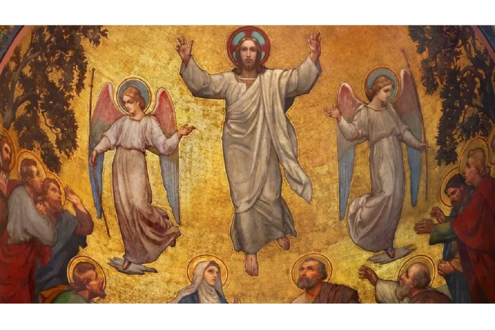
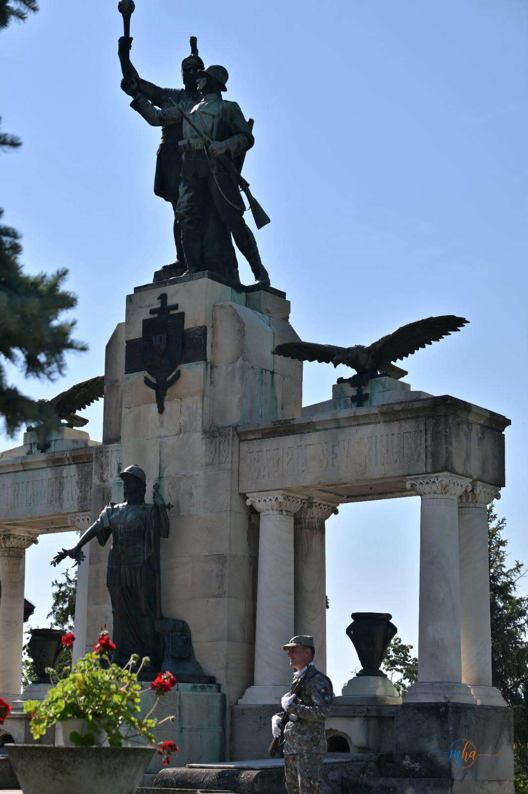
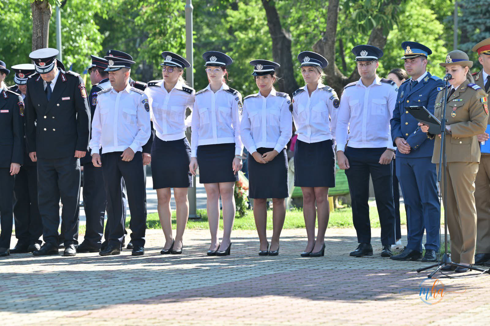
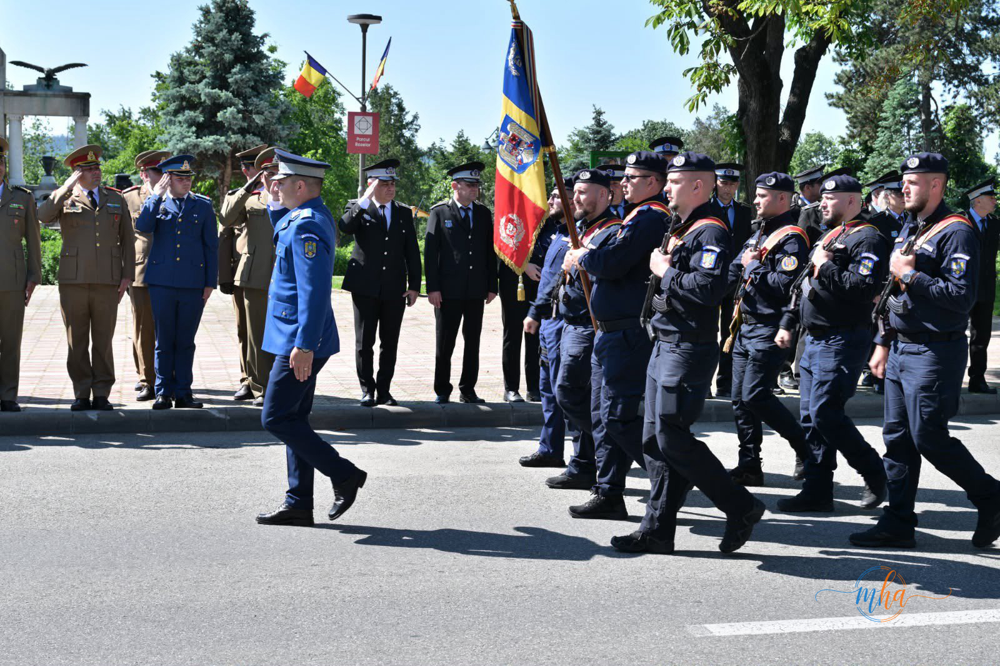
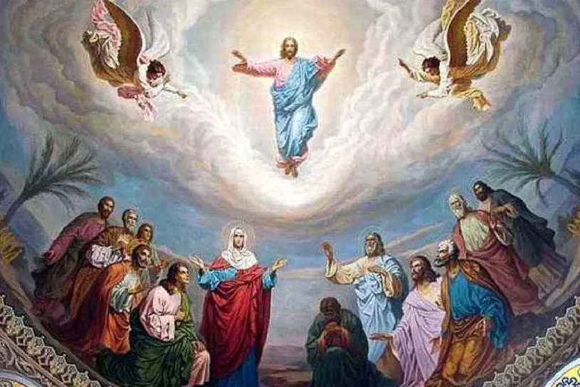

Redacția MehedintiAzi.ro se închină cu respect în fața memoriei tuturor celor care au murit pentru libertatea, unitatea și demnitatea poporului român. Memoria lor trăiește în noi.
Ziua de 21 mai 2026 a adus în Drobeta-Turnu Severin o triplă sărbătoare cu o deosebită încărcătură spirituală, istorică și patriotică. Municipiul a marcat în aceeași zi Înălțarea Domnului, prăznuirea Sfinților Împărați Constantin și Elena și Ziua Națională a Eroilor — trei momente de referință din calendarul religios și național al României, unite în această zi solemnă de mai.
Manifestările organizate cu acest prilej au adunat autorități locale și județene, reprezentanți ai instituțiilor statului, ai Armatei Române, ai Bisericii Ortodoxe, cadre militare în rezervă, elevi și numeroși cetățeni care au dorit să aducă un omagiu eroilor neamului și să participe la momentele solemne dedicate acestei zile speciale.
Dimineața — bisericile pline de credincioși

Încă din primele ore ale dimineții, bisericile din municipiu au fost pline de credincioși veniți să participe la Sfânta Liturghie oficiată cu ocazia Înălțării Domnului. Această mare sărbătoare creștină, celebrată la 40 de zile după Paște, amintește de momentul în care Mântuitorul Iisus Hristos S-a înălțat la cer în fața ucenicilor Săi, simbolizând biruința asupra morții și speranța vieții veșnice.
În cadrul sfintelor slujbe au fost rostite rugăciuni speciale pentru pace, pentru unitatea poporului român și pentru odihna sufletelor eroilor care și-au dat viața pentru credință și țară. Tot astăzi au fost sărbătoriți și Sfinții Împărați Constantin și Elena, personalități esențiale în istoria creștinismului, iar numeroși severineni care poartă aceste nume și-au serbat onomastica alături de familie și prieteni.
Ceremonia solemnă la Monumentul Eroilor


Momentul cu cea mai puternică încărcătură emoțională a fost reprezentat de manifestările dedicate Zilei Eroilor, sărbătoare națională comemorată în România odată cu Înălțarea Domnului. Ceremoniile oficiale desfășurate la monumentele eroilor din Drobeta-Turnu Severin au reunit reprezentanți ai administrației publice locale și județene, oficialități militare și religioase, veterani, elevi și cetățeni care au dorit să păstreze vie memoria celor care au făcut sacrificiul suprem pentru libertatea, independența și unitatea României.
Evenimentele au început cu intonarea Imnului Național al României și au continuat cu slujbe de pomenire oficiate de preoți ai Episcopiei Severinului și Strehaiei. În cadrul ceremonialului militar și religios au fost depuse coroane și jerbe de flori la monumentele dedicate eroilor căzuți pe câmpurile de luptă, iar participanții au păstrat momente de reculegere în semn de respect pentru memoria celor care au apărat valorile și identitatea națională.

Atmosfera solemnă a fost completată de prezența militarilor și a fanfarei militare, care au oferit ceremonialului un caracter deosebit, încărcat de emoție și respect. Oficialitățile prezente au transmis mesaje prin care au subliniat importanța păstrării memoriei istorice și a respectului față de eroii României, evidențiind faptul că sacrificiul acestora trebuie cunoscut și transmis generațiilor viitoare.
Mesajele autorităților — unitate și respect pentru trecut
Reprezentanții administrației locale au vorbit despre necesitatea păstrării valorilor spirituale, patriotice și culturale care definesc identitatea poporului român, într-o perioadă în care unitatea și solidaritatea comunității sunt mai importante ca oricând. De asemenea, aceștia au evidențiat faptul că astfel de momente reprezintă nu doar ceremonii oficiale, ci adevărate lecții de istorie și respect pentru trecut.
„Sacrificiul eroilor noștri nu a fost în zadar. Datoria noastră față de ei este să construim o Românie demnă de jertfa lor."
Înălțarea Domnului — semnificație spirituală

În tradiția ortodoxă, Înălțarea Domnului este prăznuită la 40 de zile după Paște și simbolizează ridicarea lui Iisus Hristos la cer, pe Muntele Măslinilor, în văzul Apostolilor și al Maicii Domnului. Este una dintre cele 12 mari praznice împărătești ale anului liturgic ortodox și marchează totodată încheierea perioadei pascale de 50 de zile.
Legătura dintre Înălțarea Domnului și pomenirea eroilor are o profundă rădăcină teologică în spiritualitatea românească: cei morți pentru patrie sunt asemănați mucenicilor, iar creștinii cred că sufletele lor sunt mai aproape de Dumnezeu în această zi de mare praznic. De aceea, Ziua Eroilor și Înălțarea Domnului se împletesc firesc, într-un singur act de rugăciune și recunoștință.
- Instituită prin Legea nr. 379/2003 ca sărbătoare națională
- Marcată în fiecare an odată cu Înălțarea Domnului (40 de zile după Paște)
- Se organizează ceremonii la monumentele eroilor din toată țara
- Se pomenesc ostașii căzuți în Primul și Al Doilea Război Mondial, Revoluție și misiuni externe
- Zi liberă legală în România
Un simbol al identității severinene
Prin organizarea acestor manifestări, Drobeta-Turnu Severin a demonstrat încă o dată respectul profund față de tradițiile religioase și memoria eroilor naționali. Ziua de 21 mai rămâne astfel un simbol al credinței, al recunoștinței și al identității naționale, o zi în care comunitatea severineană s-a unit în rugăciune, comemorare și respect pentru valorile care au stat la baza istoriei și existenței poporului român.
Monumentul Eroilor din Drobeta Turnu Severin, unul dintre cele mai impozante din sudul țării, a stat și în această zi mărturie a sacrificiului generațiilor care au construit România modernă. Florile depuse la picioarele monumentului au vorbit mai mult decât orice cuvânt: nu i-am uitat și nu îi vom uita.
Echipa MehedintiAzi.ro se înclină cu recunoștință în fața memoriei tuturor celor care au luptat și au murit pentru România. Sacrificiul lor trăiește în fiecare generație care nu uită.
Sursa: Observație proprie / Primăria Drobeta Turnu Severin / Redactia MehedintiAzi.ro